Podstawy Gry South Central Nerds/Bangers
Wybierz ścieżkę szkoleniową, aby rozpocząć swoją drogę na Hoodzie.
LORE Gangu 83 Hoover Criminals Gang
Poznaj pełną historię, korzenie oraz ewolucję 83 Hoover Criminals Gang in South Central Los Angeles. Niezbędna wiedza historyczna dla każdego członka setu. W końcu musisz wiedzieć kim jesteś oraz historię swojego gangu. Ta wiedza pozwoli ci identyfikować się z gangiem.
Sprawdź Lore Gangu →
Podstawy od zera po kolei
Poradnik krok po kroku. Idealny dla początkujących osób które chcą wejść w świat HoodRP. Poradnik też jest dobry dla osób które chcą odświeżyć wiedzę.
Rozpocznij naukę od zera →
Wolny Research
Baza wiedzy tematycznej podzielona na kategorie. Przeglądaj konkretne zagadnienia które cie interesują oraz przeglądaj wszystko do woli.
Przeglądaj luźną bazę →

POSTAĆ ~ OGÓLNE ZACHOWANIA + ROLEPLAY
Opis kategorii: Zachowania, ubiór i uzależnienia.
9 TEMATÓW

GANG ~ WSZYSTKO O GANGACH
Opis kategorii: Slang, spoty, relacje, afiliacje i struktury uliczne.
8 TEMATÓW

MEMBER ~ GRANIE CZŁONKA GANGU
Opis kategorii: Generacje, inicjacje, tatuaże i zasady dyscyplinarne.
8 TEMATÓW
Uzależnienia
Sprawdź
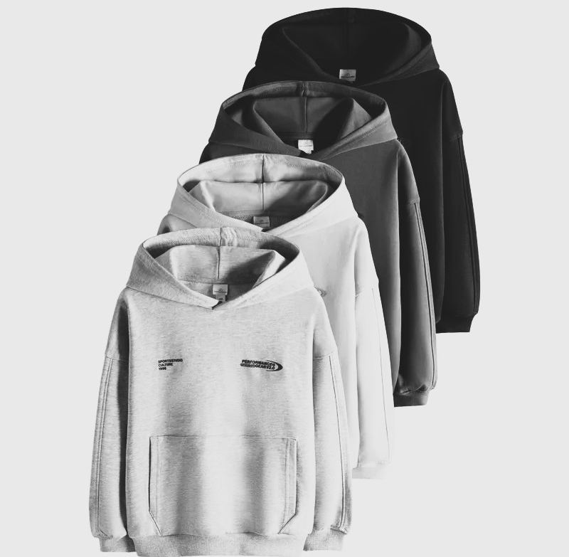
Ubiór
Sprawdź
Słabości Postaci
Sprawdź
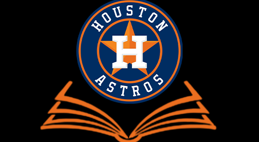
Historia Postaci
Sprawdź
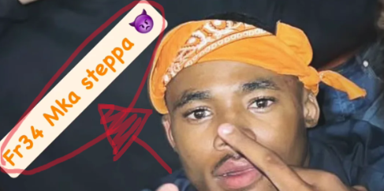
Hood Names
Sprawdź
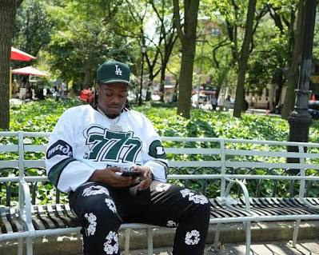
Nuda...
Sprawdź
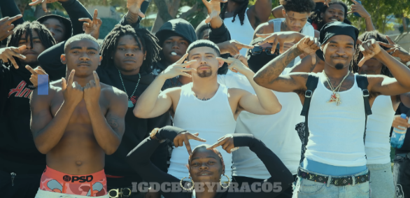
Grzeczni Ludzie...
Sprawdź
school...
Sprawdź
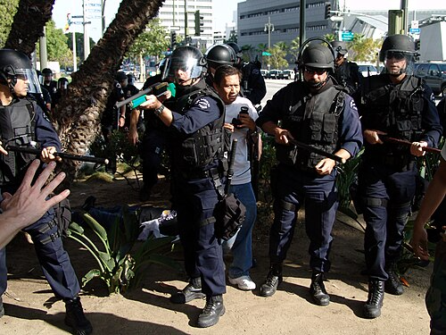
Cops...
Sprawdź
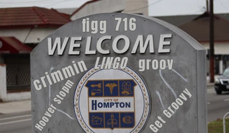
Slang & Lingo...
Sprawdź
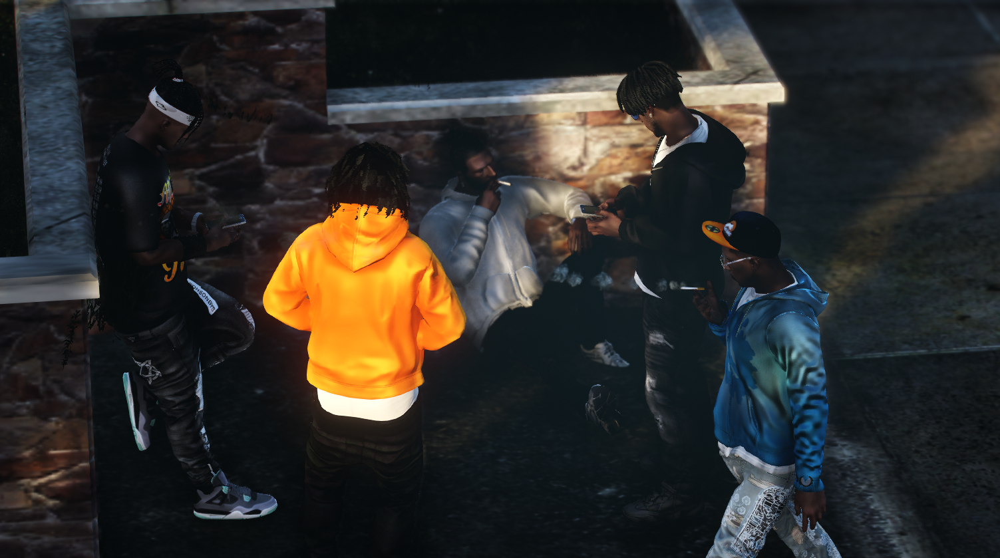
Hangout & Spots...
Sprawdź
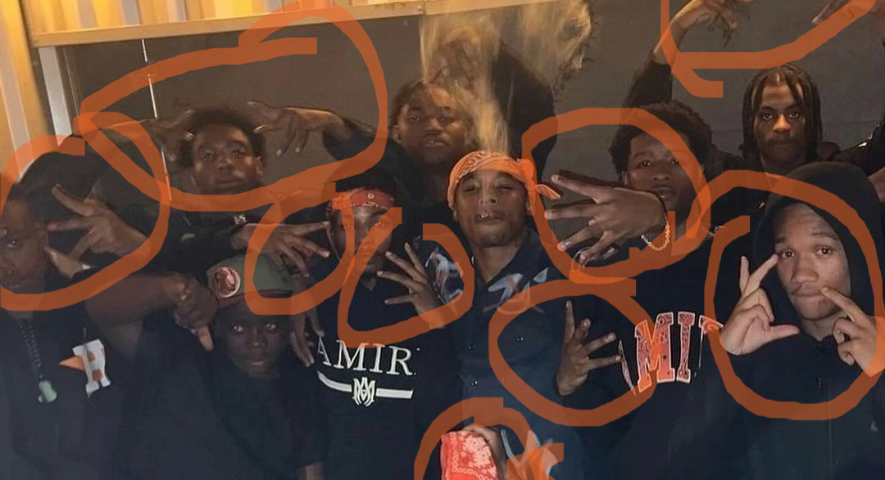
Gang Signy...
Sprawdź
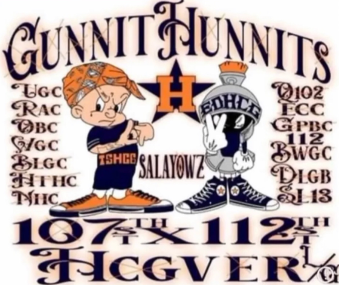
Relacje...
Sprawdź
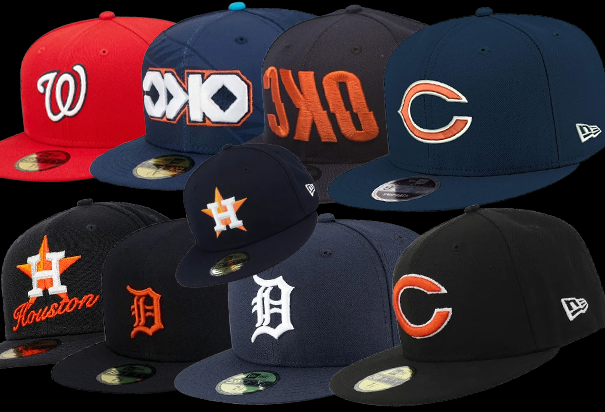
Affilacje...
Sprawdź
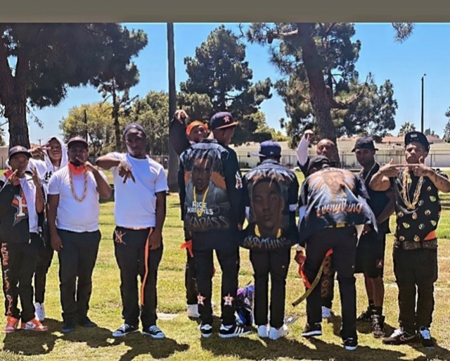
Hood Days...
Sprawdź
Podziały...
Sprawdź
Wackouts...
Sprawdź
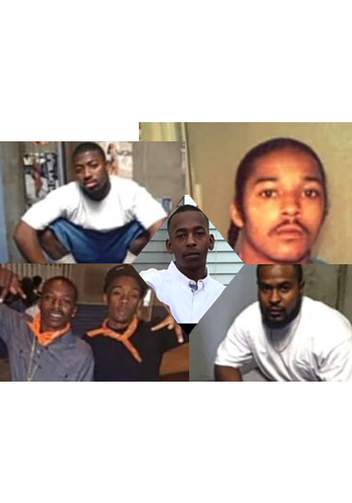
Generacje
Sprawdź
Inicjacje
Sprawdź
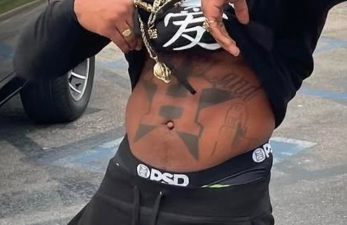
Tatuaże / Eyebusters
Sprawdź
Ranker Behavior...
Sprawdź
Disciplinary Punishment...
Sprawdź
Zachowania...
Sprawdź
Graffiti...
Sprawdź
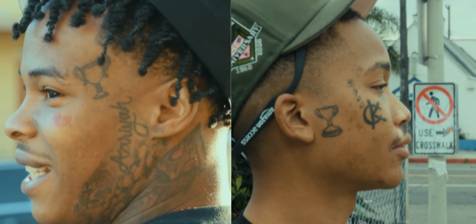
Zmiany...
Sprawdź
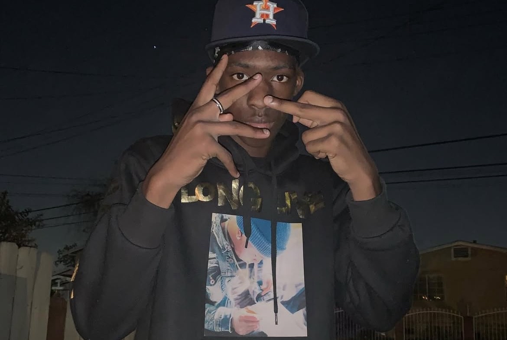
Mężczyzna
Wybierz
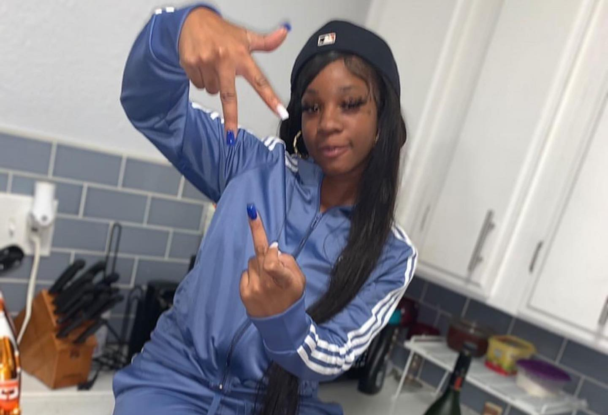
Kobieta
Wybierz